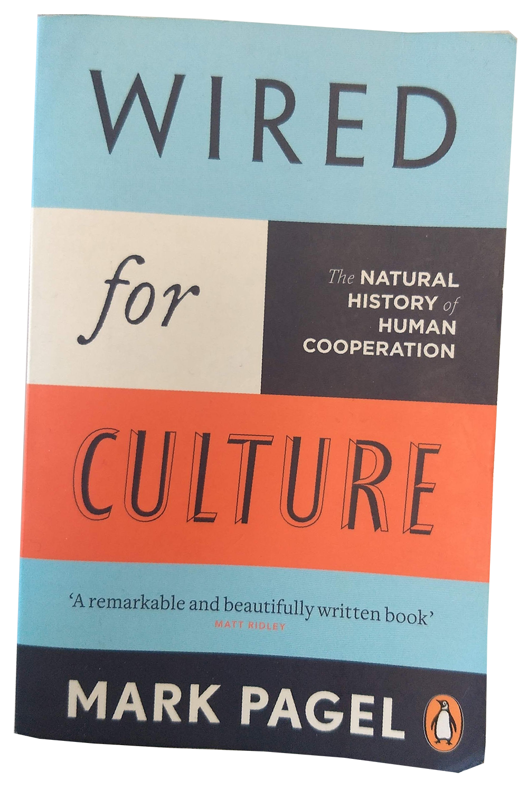
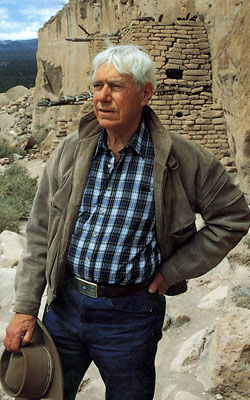
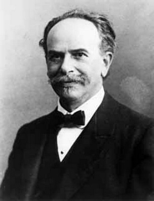
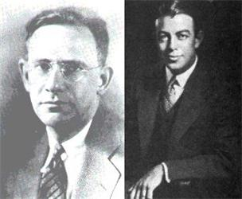

Provide a context for later 'reactions' and 're-thinking'
## OUTLINE
* E.T.Hall and the Foreign Service Institute
* Hall and Trager's program and 'paradigm'
* *The Silent Language*
* Intercultural Communications and US-Japan relations
Is ‘culture’ useful to us?
Culture as a ‘special domain of reality’?
“It turns out you cannot find the unifying causal principles (because there aren’t any). So you marvel at the many-splendored variety and diversity of culture.” (Boyer in Brockman 2015)
Reproduction of ‘mental states’?!?
Evolutionary tool?

Mark Pagel
‘Cultural Survival Vehicle’
Questions
Is the idea of ‘culture’ useful to us in daily life?
Does it make sense (for us, as serious students) to study ‘culture’ in an academic context?
Should we let the idea of studying ‘culture’ die?
Why study XCC/CAC?
Technology
Demographics
Peace
Self-awareness
Ethics
Overview
Classical approach to cross/intercultural communication developed in 1950s USA.
Alternative 'cultural studies' approach from 1970s Europe (mainly UK)
Recent approaches more sensitive to nuanced understandings of 'culture'. Critical of classical paradigm.
Edward T. Hall and the FSI

Grew up in New Mexico, US
Worked with Navajo, Hopi labourers
Joined Foreign Service Institute as Prof. of Anthropology, 1951
Foreign Service Institute
Opened in 1947 as a university-like institution
Now part of US State Dept.
Still offers language training for US diplomats and officials.
Why the FSI?
Post WW2, US emerges as a 'world power'
US diplomats are under-prepared for this
Particular responsibilities towards Japan.
Hall's FSI Program

Franz Boas
Cultural anthropology
Linguistics
Ethology
Freudian psychoanalysis
Linguistics

Edmund Sapir and Benjamin Whorf
The Sapir-Whorf hypothesis proposes that human being perceive the world through their native langauge, ie. people who speak different languages see the world in different ways.
This is controversial!
Ethology
The study of human behaviour and social organization from a biological perspective